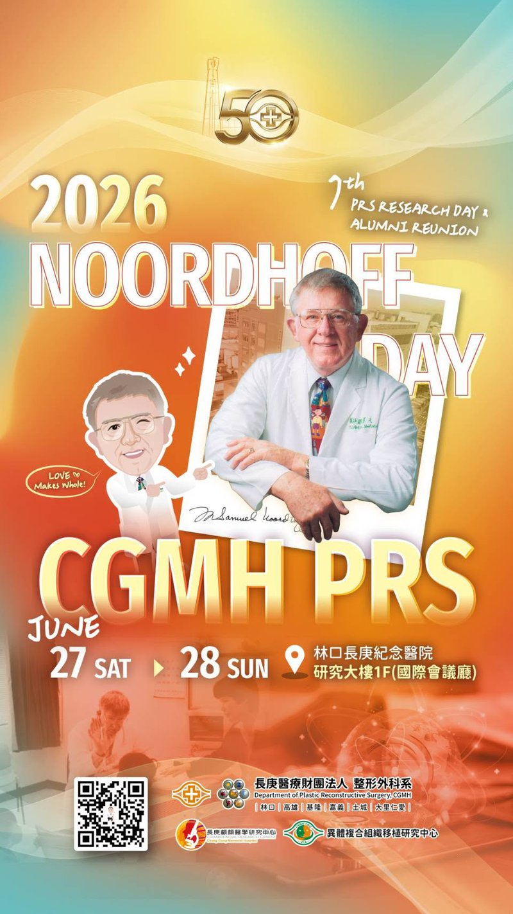

Noordhoff Day 2026 & 7th PRS Research Day

Event Overview
The annual Noordhoff Day 2026 is here! This year carries special significance — it is not only our annual gathering for academic and collegial exchange, but also marks the 50th anniversary (Golden Jubilee) of Chang Gung Plastic Surgery. Fifty remarkable years made possible by every member of the Chang Gung Plastic Surgery family.
The event is held together with the 7th PRS Research Day & Alumni Reunion, with a program as exciting as ever — and even more so this year. More than a conference, it is a grand reunion of the plastic surgery family. Whether you are working within the hospital or shining elsewhere, Noordhoff Day is always the place to reconnect, recharge, and rediscover your original aspirations.
Noordhoff Day is named after Dr. Samuel Noordhoff, founder of the Burn Center and of Chang Gung Plastic Surgery, embodying the heritage and spirit of every Chang Gung plastic surgeon.
Noordhoff Day 2026 · 50th Anniversary Golden Jubilee
Organizing Committee
Dr. Yu-Te Lin
Dr. Cheng-Hung Lin
Dr. Chih-Hao Chen
We sincerely invite all colleagues and alumni to join us in celebrating this milestone event!
Register Now
Join us for this year's Noordhoff Day and celebrate 50 years of Chang Gung Plastic Surgery!
Go to Registration Form